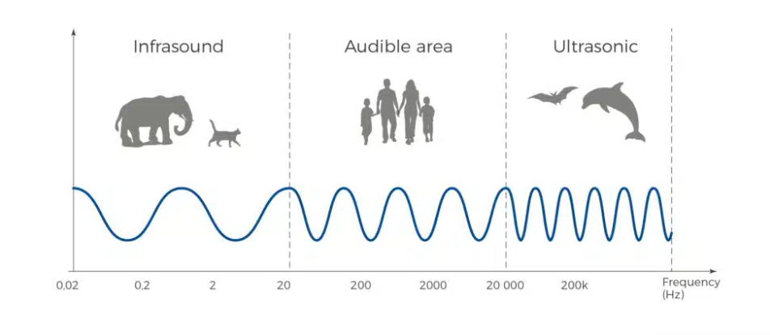
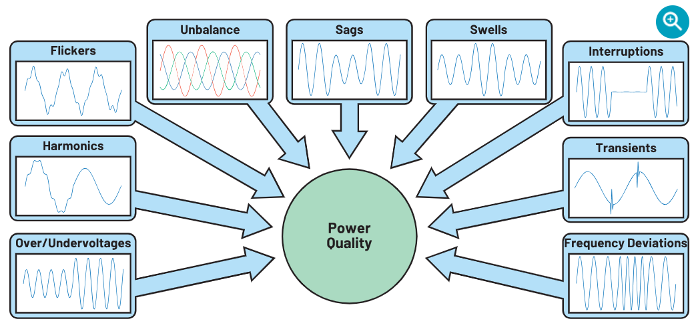
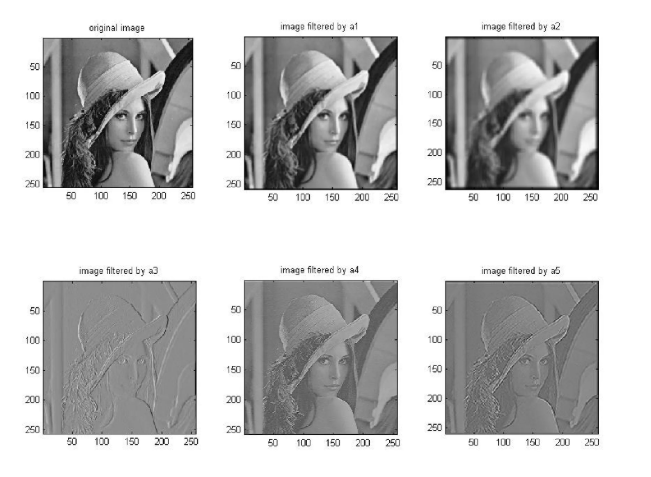
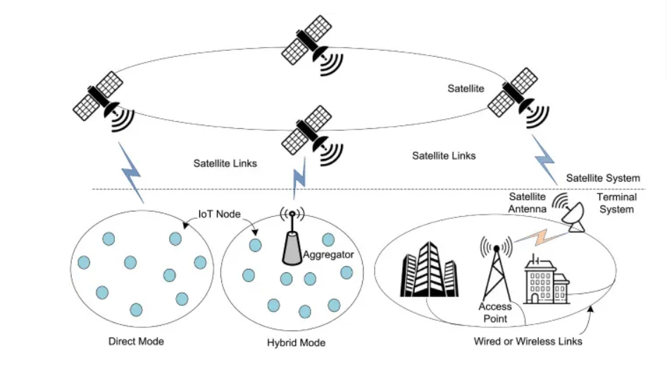

1. Signal Processing

Harmonic analysis is used to break complex signals into simple sine and cosine waves. It helps in audio processing, mobile communication, radar systems and noise reduction.
2. Sound & Music Engineering

Music signals contain multiple harmonics. Harmonic analysis helps identify frequencies, improve sound quality and remove unwanted noise in recordings.
3. Electrical Engineering

In AC circuits, harmonic analysis helps study voltage and current waveforms. Engineers use it to reduce harmonic distortion in power systems.
4. Image Processing

Harmonic analysis is used in image compression, edge detection and filtering techniques. It plays an important role in medical imaging and AI vision systems.
5. Communication Systems

Wireless communication systems use Fourier and harmonic analysis for signal transmission, modulation and frequency analysis.
6. Data Science & AI

Harmonic analysis is used in time series analysis, pattern recognition and machine learning applications to identify repeating patterns in data.